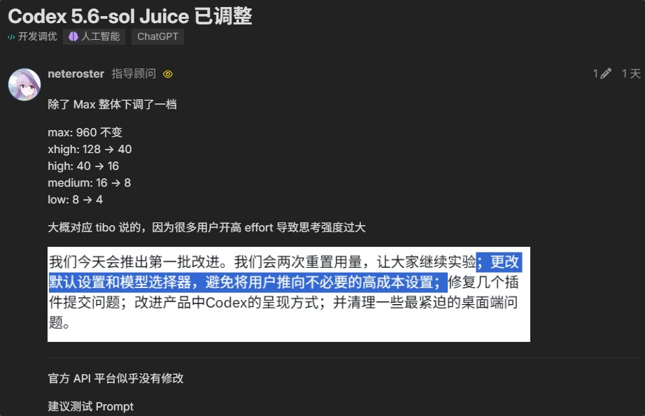

@MaxForAI @thsottiaux 连max都降到128了



佬友neteroster发现GPT-5.6-sol的Juice值除了Max整体下调了一档
大概Tibo移除5小时使用限制，只是为了拉用户量，甚至官方教学CLIProxyAPI配置OAI接口配置ClaudeCode（claudex）
然而现在都直接明着降智，搞得大家不得不开Max了 https://t.co/ZQLm8JEie3 https://t.co/KHcLOOyogO
大概Tibo移除5小时使用限制，只是为了拉用户量，甚至官方教学CLIProxyAPI配置OAI接口配置ClaudeCode（claudex）
然而现在都直接明着降智，搞得大家不得不开Max了 https://t.co/ZQLm8JEie3 https://t.co/KHcLOOyogO
卧槽？？OpenAI疯了吗？？
@thsottiaux 刚刚宣布，暂时取消所有 Plus、Business 和 Pro 套餐的 5 小时使用时长限制？？？
同时他们还正在推出多项改进，使 GPT 5.6 Sol 在各方面更加高效，从而减少使用量消耗。
并将在未来一小时内重置限额！！？
别睡了！去干活家人们 https://t.co/rPmwAfIdn1
@thsottiaux 刚刚宣布，暂时取消所有 Plus、Business 和 Pro 套餐的 5 小时使用时长限制？？？
同时他们还正在推出多项改进，使 GPT 5.6 Sol 在各方面更加高效，从而减少使用量消耗。
并将在未来一小时内重置限额！！？
别睡了！去干活家人们 https://t.co/rPmwAfIdn1